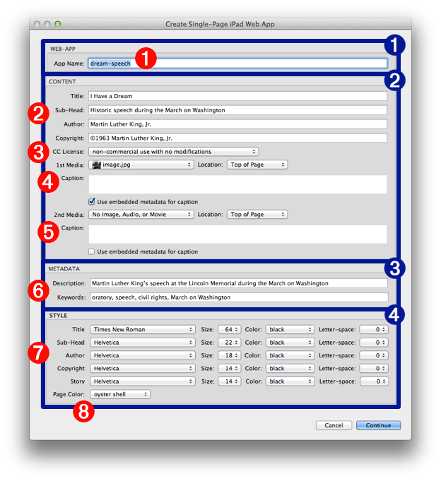

Every installation of OS X, whether on a desktop or laptop computer, has a built-in architecture for executing automation “recipes” called “workflows.” Automation workflows are created using the Automator application and can be saved in a variety of formats, including as service plugins that appear as menu items on contextual menus in applications and the Finder.
When a contextual system service is selected by the user, its related workflow file is executed by the operating system, using the current selection (often selected text or files) as the source material to be processed by the service workflow.
Workflows are composed of a series of one or more individual steps called “actions.” Like the individual steps in a kitchen recipe, each action in the workflow processes the material passed to it by the previous action, and then passes the results of it processes to the action that follows it, until all steps (actions) of the automation recipe have been completed.
Many of the Automator actions that are used to create workflows have interfaces containing user-settable controls that determine the parameters for how the individual action processes the data passed to it. To provide maximum flexibility in workflow design, these actions may be set to display their interfaces when their parent workflow is run, in order to allow the user to dynamically provide input or set parameter values.
The Automator action used by the provided system service in this tutorial is designed to display its interface when its parent system service workflow is run. The following describes each of the controls or input fields of the action, and how they are used.
For an overview of Automator, watch this short video. For an overview of Services, watch this short video.
The interface for the Create Single-Page iPad Web App action (see below) is divided into four sections: 1 Application, 2 Content, 3 Metadata, and 4 Style
1 Application:
1 Application Name - The value entered here is the name for the folder containing the web-application content. When the action is run, this folder will be created on the desktop.
2 Content:
2 Title, Sub-Head, Author, Copyright - The values entered here appear at the top of the created document.
3 Creative Commons license - You may choose to distribute your work under a license from the Creative Commons organization. Pick one of the licensing options from this popup menu and the cooresponding CC license will be added to the end of the article.
4 1st Media Item - Optionally, the created documents can contain up to two supporting media items (image, audio, or video). Included media may be placed at either the start or end of the body content. If the chosen media item is an image that contains embedded IPTC caption data, you can select the checkbox to have the action retrieve the embedded data and use it as the caption. Otherwise, you may enter the media caption in the provided text input field.
NOTE: This Automator action does not automatically encode chosen video files. Be sure to process your video file using the built-in video encoding service in the Finder, prior to selecting it for inclusion in a created document.
5 2nd Media Item - [see 1st Media Item description above].

3 Metadata:
6 Description, and Keywords - The contents of these items are placed as meta entries in the head section of the main HTML file of the web app, making their data available to search engines. Keywords should be entered as a comma-delimited list of words or phrases.
4 Style:
7 Type Style - Individual controls are available for choosing common settings for font-family, font-size, font-color, and letter-spacing for each of the page text elements: Title, Sub-Head, Author, Copyright, and Story.
8 Page Color - Use the popup menu to choose a page color from a selection of common colors as well as specialized options such as: oyster shell, manila, seashell, cream, icy lavender, and icy pink.
NOTE: all of the text input fields in the action view accept Automator workflow variables as input
In the next segment, you’ll use the services you just installed to create a single-page web application.